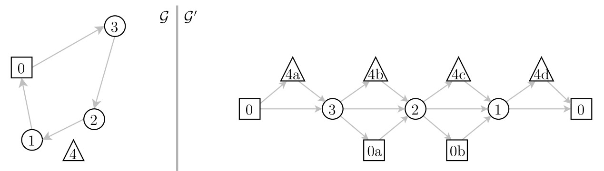

Side projects
SieveSifter

FRVCP Solver
Froger et al published an algorithm to optimally schedule recharging stops for electric vehicles along a route. The algorithm serves as a stepping stone between the worlds of conventional vehicle routing problems and electric vehicle routing problems. I made an open source implementation of the algorithm in an attempt to help more researchers from the former make their way into the latter.
VRP-REP Mapper
The Vehicle Routing Problem REPository (VRP-REP) is a place where researchers in vehicle routing can share information, like problem instances and solutions, in a common format. Mapper is a simple mapping utility for those instances and solutions. It's available on VRP-REP's website here.

The Birthday Fairy Scheduling Assistant
When coworkers decide to bring desserts for one another's birthdays, how do they decide who brings dessert when and for whom? The Birthday Fairy Scheduling Assistant is a simple optimization tool to equitably answer this question.
Access the Birthday Fairy Scheduling Assistant here.
| DessertChef | PreparesFor | OnDate |
|---|---|---|
| Steven Tyler | George Dantzig | 11-2-16 |
| George Washington Carver | Langston Hughes | 1-18-17 |
| Langston Hughes | Jane Goodall | 4-5-17 |
More...
More projects can be found on my GitHub page.